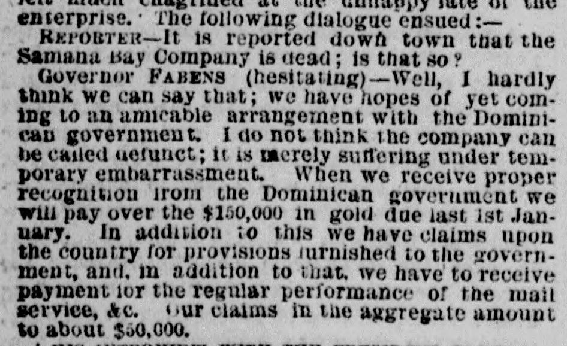
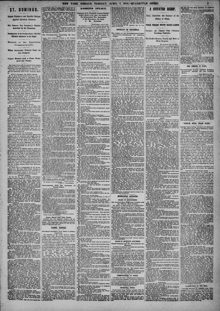

See the full pageVer la página completaWhen we receive proper 1 recognition irom the Dominican government weCuando recibamos el debido reconocimiento del gobierno dominicano, nosotros
Based on the provided excerpt, a representative identified as Mr. Pabens stated that his company's financial embarrassment is temporary and that they would pay $150,000 in gold once receiving proper recognition from the Dominican government, noting that total company claims amount to about $80,000. He also reported having a long interview with Gonzalez, whom he considers the head of the revolutionary party rather than the legitimate ruler since Gonzalez has not taken the oath of office. Additionally, Mr. Howe wrote a letter to President Grant, the U.S. Consul reported on the occurrence to Secretary of State Hamilton Fish, and the publication of Gonzalez's decree negatively affected the company's plans to issue a commercial loan.Según el extracto facilitado, un representante identificado como el Sr. Fabens declaró que las dificultades financieras de su empresa eran temporales y que pagarían 150.000 dólares en oro en cuanto recibieran el debido reconocimiento del gobierno dominicano, señalando que las reclamaciones totales de la empresa ascendían a unos 80.000 dólares. Asimismo, informó haber mantenido una prolongada entrevista con González, a quien consideraba cabecilla del partido revolucionario y no gobernante legítimo dado que González no había prestado juramento del cargo. Por otra parte, el Sr. Howe dirigió una carta al presidente Grant, el cónsul estadounidense informó del suceso al secretario de Estado Hamilton Fish, y la publicación del decreto de González perjudicó los planes de la compañía para emitir un empréstito comercial.
FULL TEXT:TRADUCCIÓN:
ested General Caminero, a brother of the general in command at the capital; Rafael Perez, Marcos Cabral, Felix Baez, Tomas Batello, José Rodriquez, Benito Moncion and Carlos Baez, charged with complication in a scheme for the return of ex-President Baez to power. Upon the intercession of the French Consul in their behalf, Carlos and Felix Baez were subsequently released.restado al general Caminero, un hermano del general al mando en la capital; Rafael Perez, Marcos Cabral, Félix Báez, Tomas Batello, José Rodriquez, Benito Monción y Carlos Báez, acusados de complicidad en un plan para el regreso del ex Presidente Báez al poder. Por la intercesión del Cónsul francés en su favor, Carlos y Félix Báez fueron subsecuentemente puestos en libertad.
THE DECREE AGAINST THE COMPANY.EL DECRETO CONTRA LA COMPAÑÍA.
The Samana Bay Company to all intents and purposes is dead. The investigation of the committee sent out from Washington on board the United States war vessel to report on the projected annexation of St. Domingo confirmed the idea. The people of this country may therefore congratulate themselves that the loss inflicted upon the community at large has not been larger than it is. It remains but to show below how the insolvent company has received its quietus, at the hands of the President elect of St. Domingo, Ignacio Gonzalez.La Compañía de la Bahía de Samaná a todos los efectos está muerta. La investigación del comité enviado desde Washington a bordo del buque de guerra de los Estados Unidos para informar sobre la proyectada anexión de Santo Domingo confirmó la idea. El pueblo de este país puede por tanto felicitarse de que la pérdida infligida a la comunidad en general no haya sido mayor de lo que es. Solo resta mostrar abajo cómo la insolvente compañía ha recibido su golpe de gracia, de manos del Presidente electo de Santo Domingo, Ignacio González.
INTERVIEW WITH GOVERNOR FABENS.ENTREVISTA CON EL GOBERNADOR FABENS.
Two members of the Samana Bay Commission returned to this city yesterday by the Tybee, and upon Governor Fabens, at Messrs. Spofford’s office, the following description of his visit was received.Dos miembros de la Comisión de la Bahía de Samaná regresaron a esta ciudad ayer en el Tybee, y del gobernador Fabens, en la oficina de los Sres. Spofford, se recibió la siguiente descripción de su visita.
Mr. Fabens was very courteous, but evidently very much chagrined at the unhappy fate of the enterprise. The following dialogue ensued:—El Sr. Fabens fue muy cortés, pero evidentemente muy disgustado por el infeliz destino de la empresa. El siguiente diálogo se suscitó:—
REPORTER—It is reported down town that the Samana Bay Company is dead; is that so?EL REPORTERO—Se informa en el centro que la Compañía de la Bahía de Samaná está muerta; ¿es eso así?
GOVERNOR FABENS (hesitating)—Well, I hardly think we can say that; we have hopes of yet coming to an amicable arrangement with the Dominican government. I do not think the company can be called defunct; it is merely suffering under temporary embarrassment. When we receive proper recognition from the Dominican government we will pay over the $150,000 in gold due last 1st January. In addition to this we have claims upon that country for provisions furnished to the government, and, in addition to that, we have to receive payment for the regular performance of the mail service, &c. Our claims in the aggregate amount to about $50,000.EL GOBERNADOR FABENS (vacilando)—Bueno, apenas creo que podamos decir eso; tenemos esperanzas de aún llegar a un arreglo amistoso con el gobierno dominicano. No creo que la compañía pueda llamarse difunta; solo está sufriendo bajo un embarazo temporal. Cuando recibamos el debido reconocimiento del gobierno dominicano pagaremos los $150,000 en oro debidos el 1 de enero pasado. Además de esto tenemos reclamaciones contra ese país por provisiones suministradas al gobierno, y, además de eso, tenemos que recibir pago por la realización regular del servicio de correos, etc. Nuestras reclamaciones en total ascienden a unos $50,000.
HIS INTERVIEW WITH THE PRESIDENT ELECT.SU ENTREVISTA CON EL PRESIDENTE ELECTO.
I had a long interview with Gonzalez, who I consider to be the head of the revolutionary party, and not the legitimate representative of the Dominican people. He has not taken the oath of office, and I therefore cannot consider him at present as the accepted Chief Magistrate. The proclamation of Gonzalez must therefore be taken for what it is worth. A new constitution, I may here remark, is being framed at St. Domingo City.Tuve una larga entrevista con González, a quien considero el jefe del partido revolucionario, y no el representante legítimo del pueblo dominicano. No ha prestado el juramento del cargo, y por tanto no puedo considerarlo al presente como el Magistrado Jefe aceptado. La proclama de González debe por tanto tomarse por lo que vale. Una nueva constitución, puedo aquí observar, está siendo redactada en la ciudad de Santo Domingo.
Dr. Howe has written a long letter to President Grant on the subject, while the United States Consul has also made a full report to Secretary of State Mr. Hamilton Fish, touching the occurrence.El Dr. Howe ha escrito una larga carta al presidente Grant sobre el tema, mientras que el Cónsul de los Estados Unidos también ha hecho un informe completo al Secretario de Estado Sr. Hamilton Fish, concerniente al acontecimiento.
WHERE THE SHOE PINCHES.DONDE APRIETA EL ZAPATO.
The publication of the decree of Gonzalez has a most prejudicial effect upon our company, for it prevents our placing on the commercial centres a loan for the company which we have had in contemplation. “Yes, sir,” said Mr. Fabens, with animation, “I think we have been very unfairly dealt with.”La publicación del decreto de González tiene un efecto muy perjudicial sobre nuestra compañía, pues nos impide colocar en los centros comerciales un empréstito para la compañía que hemos tenido en contemplación. «Sí, señor», dijo el Sr. Fabens, con animación, «creo que hemos sido tratados muy injustamente».
ALLEGED BRITISH INTRIGUE.PRESUNTA INTRIGA BRITÁNICA.
Mr. St. John, British Chargé d’Affaires to Hayti, has been in intercourse with Mr. Gonzalez, and, it is alleged, has suggested, on behalf of President Nissage Saget, of Hayti, a confederation of St. Domingo and Hayti. The terms of the suggested treaty were that the treaty of the Samana Bay Company was to be cancelled, and that a certain amount of disputed frontier lands was to be ceded to Hayti. It was therefore understood that England wasEl Sr. St. John, Encargado de Negocios británico en Haití, ha estado en comunicación con el Sr. González, y, se alega, ha sugerido, en nombre del presidente Nissage Saget, de Haití, una confederación de Santo Domingo y Haití. Los términos del tratado sugerido eran que el tratado de la Compañía de la Bahía de Samaná sería cancelado, y que cierta cantidad de tierras fronterizas disputadas sería cedida a Haití. Por tanto se entendía que Inglaterra estaba
The New York Herald. New York, April 7, 1874. Page 7.